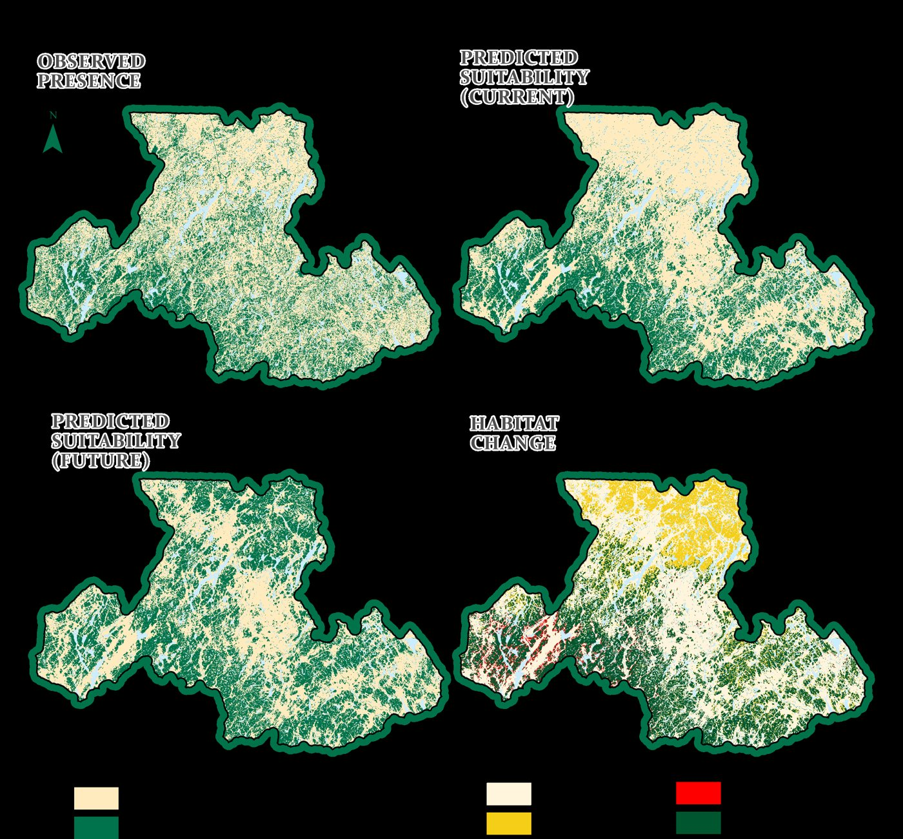

Published · Forestry 2026 Species distribution model
Where can sugar maple live at its northern edge?
Near-future habitat gains (~16%) outweigh losses (~3%), but they depend on fine-scale terrain and soil, not climate alone.
A Random Forest model built on 3,664 ground plots and 20 m lidar terrain, soil and climate layers. Tested on spatially independent data: AUC 0.868, 76% accuracy. Winter cold, wind exposure, soil cation exchange and wetness drive where maple can grow.